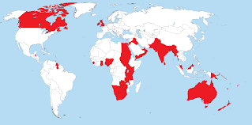

Overview
The British Empire, the largest in history, spanned continents and shaped global politics, trade, and culture. At its peak in 1920, it ruled over 412 million people and covered 24% of Earth's landmass.
Founder
Name: Queen Elizabeth I
Founded: 1588 (following defeat of the Spanish Armada)
Accomplishments: Chartering the East India Company (1600), initiating colonial expansion, and establishing naval dominance.
Cause of Death: Natural causes
Location: Richmond Palace, England
Greatest Achievements
- Global naval supremacy and control of key sea routes
- Industrial Revolution leadership and technological innovation
- Colonial expansion across Africa, Asia, Americas, and Oceania
- Formation of the Commonwealth of Nations
- Spread of English language, legal systems, and parliamentary governance
Major Defeats
- American Revolutionary War – Loss of 13 colonies (1783)
- Battle of Isandlwana – Zulu victory (1879)
- Fall of Singapore – Japanese conquest (1942)
- Retreat from Kabul – Afghan resistance (1842)
- Decolonization – Loss of India (1947) and Hong Kong (1997)
Empire Map
At its height, the British Empire covered 35.5 million km² across five continents.
Timeline
- 1588 – Defeat of Spanish Armada
- 1600 – East India Company chartered
- 1757 – Battle of Plassey, control of Bengal
- 1783 – Loss of American colonies
- 1857 – Indian Rebellion; Crown assumes control
- 1919 – Peak territorial extent post-WWI
- 1947 – Indian independence
- 1997 – Handover of Hong Kong to China
Major Castles
- Held: Windsor Castle, Edinburgh Castle, Tower of London
- Contested: Conwy Castle (Wales), Stirling Castle (Scotland)
- Lost: Fort William (India), Fort Amsterdam (Ghana)
Troop Units
- Infantry: British Grenadiers, Highland Regiments
- Cavalry: Royal Horse Guards, Bengal Lancers
- Naval Forces: Royal Navy – backbone of global dominance
- Colonial Forces: Gurkhas, Indian Sepoys, African Rifles
- Most Notable: Redcoats (18th century), Gurkhas (fearless mountain warriors), Royal Marines (elite amphibious troops)